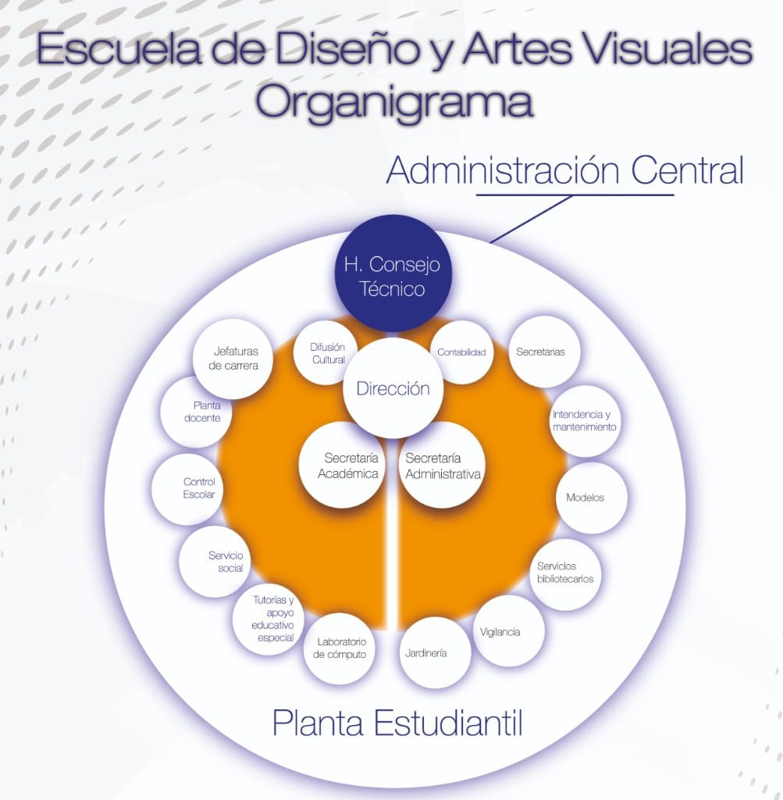
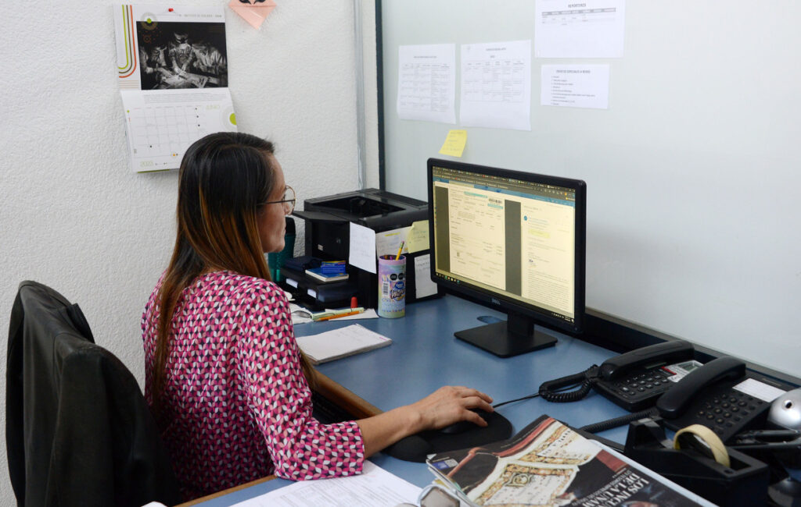
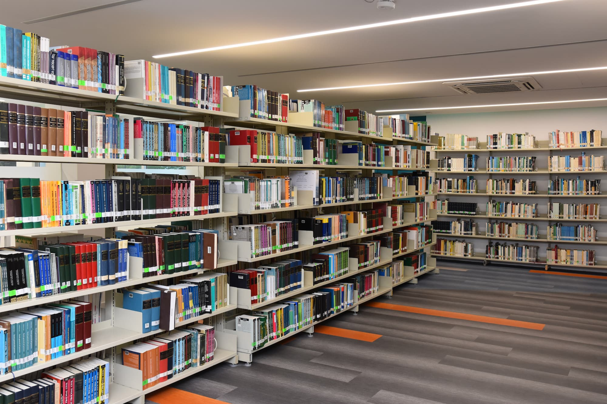

Colaborar con la programación, planeación, coordinación, organización y funcionamiento del área
administrativa de la unidad académica,
supervisando las funciones de personal académico ,administrativo, recursos financieros y materiales,
con
el apoyo de procedimientos
apropiados que permitan la integración de las funciones optimas de los servicios administrativos y
el
buen desempeño en cada uno de
las áreas, con el fin de aprovechar al máximo los recursos con los que se cuenta, así como también
resolver problemas que afecten en
el área laboral de los administrativos y académicos en dicha unidad académica.

Estructura Organizacional
Secretaria Administrativa
Coordinación General
Secretarias
Biblioteca
Modelos
Intendencias
Veladores
Departamentos y Funciones
Secretaria Administrativa
Coordinación Principal
Colaborar con la programación, planeación, coordinación, organización y funcionamiento del área
administrativa de la unidad académica, supervisando las funciones de personal académico
,administrativo, recursos financieros y materiales, con el apoyo de procedimientos apropiados
que permitan la integración de las funciones optimas de los servicios administrativos y el buen
desempeño en cada uno de las áreas, con el fin de aprovechar al máximo los recursos con los que
se cuenta, así como también resolver problemas que afecten en el área laboral de los
administrativos y académicos en dicha unidad académica.
Coordinar y supervisar las actividades del personal que conforma la secretaría
administrativa.
Establecer los mecanismos de coordinación que permitan la adecuada administración de
los recursos humanos, financieros y materiales asignados.
Supervisar el pago de nómina, el buen uso de la información que se derive de ella y
su entrega oportuna a la dirección general de finanzas.
Vigilar la atención que se dé al personal en lo correspondiente a sus necesidades,
derechos y obligaciones, sobre las bases legales procedentes.
Definir las políticas y procedimientos a seguir para el aprovisionamiento de bienes,
materiales y prestación de servicios que se requieran en el desempeño de las
actividades de las diferentes áreas.
Participar en la publicación de eventos organizados por la dependencia dentro de su
área.
Auxiliar en la elaboración de listas de materiales necesarios para el desarrollo de
las labores al interior de la dependencia.
Representar a la unidad académica ante las autoridades administrativas
universitarias.
Llevar un registro y control de los asuntos y actividades relevantes de la
secretaría administrativa por cada una de las áreas que la integran.
Apoyar al departamento de difusión cultural en la logística para la realización de
eventos.
Promover la capacitación y adiestramiento del personal administrativo en los
programas y áreas que favorezcan su desarrollo y la superación del centro.
Auxiliar al director en la elaboración anual del proyecto de presupuesto de la
unidad académica conforme a criterios programáticos.
Informar al director de manera especial sobre el ejercicio del presupuesto.
Coordinar y supervisar las actividades del personal de vigilancia, intendencia,
modelos, secretarias y veladores.
Reportar y solicitar el mantenimiento oportuno de equipo y muebles de oficina.
Auxiliar en la coordinación de eventos especiales a desarrollar, (informe anual de
labores, sesiones de consejo universitario, conferencias de prensa, etc.).
Atender a funcionarios universitarios, públicos y demás, durante reuniones de índole
institucional.
Prever necesidades de material y equipo, requerido en su área de trabajo.
Auxiliar en la convocatoria y eventos de índole institucional.
Coordinar y controlar las actividades de reproducción y distribución de los diversos
documentos oficiales (convocatorias diversas, boletín de consejo universitario,
propuesta de índole institucional, etc.).
Elaborar y presentar ante su jefe inmediato para su aprobación el plan operativo y
el presupuesto anual de la Secretaría a su cargo.
Organizar, gestionar y controlar las compras, almacenaje y distribución de los
materiales y equipos necesarios para la operación regular de la unidad académica.
Supervisar el mantenimiento de las instalaciones, condiciones de limpieza y ambiente
de trabajo, así como la reposición de los materiales y equipos de la unidad
académica.
Vigilar y controlar que la fiscalización de la documentación comprobatoria del
gasto, cumpla con las normas exigidas por la contraloría general y la dirección de
auditoría interna.
Sugerir a la dirección, posibles mejoras a la estructura orgánica y manuales
administrativos.
Organizar, gestionar y controlar dentro de su ámbito de competencia, las altas,
bajas, cambios, licencias, viáticos y demás movimientos del personal académico y
administrativo.
Llevar el archivo de la información administrativa de la unidad académica.
Vigilar el correcto y oportuno ejercicio y control del presupuesto de egresos de la
unidad académica.
Crear y conservar las normas para la prestación oportuna de los servicios de
intendencia, seguridad y vigilancia, necesarios para el buen funcionamiento de las
instalaciones de la unidad académica.
Llevar el registro y control de la puntualidad y asistencia del personal
administrativo adscrito a la unidad académica, ordenando el pago de los estímulos y
los descuentos respectivos según el caso.
Administrar y supervisar el proceso de actualización del padrón del personal
académico y administrativo de la unidad académica.

Secretarias
Apoyo Administrativo
Atender de manera oportuna las disposiciones generales y específicas del área administrativa, así
como también la realización de documentos requeridos por la administración de la unidad
académica, elaborados con eficacia ortográfica y limpieza, además de atender a los estudiantes
que requiera información en la unidad académica.
Auxiliar en la redacción de documentos propios de la dependencia, haciéndolo con
propiedad y limpieza, siguiendo las reglas ortográficas y gramaticales.
Elaborar, revisar, recibir, enviar, registrar y archivar la correspondencia y otros
documentos propios de la administración y dirección de la unidad académica.
Atender llamadas telefónicas y tomar anotaciones si así se requiera.
Proporcionar orientación e información al público que lo requiera.
Solicitar el equipo y material de oficina necesario para el cumplimiento de su
trabajo.
Reportar fallas o desperfectos de su equipo e instalaciones; así como solicitar el
mantenimiento oportuno de los mismos, ante su jefe inmediato.
Llevar un directorio de autoridades universitarias, así como funcionarios de otras
dependencias, (locales y nacionales).
Auxiliar en la reproducción de documentos.
Auxiliar en trabajos que correspondan a movimientos de oficina.
Auxiliar en la compaginación de documentos.
Auxiliar en el mantenimiento y consulta de archivo de la dependencia.
Llevar control de la correspondencia recibida y enviada debidamente clasificada en
expedientes por dependencia, tanto interna como externa.
Manejar equipo de oficina, necesario para su trabajo.
Coordinar las actividades inherentes a la recepcion, control y entrega de la
correspondencia.
Auxiliar en la elaboración de acuerdos y audiencias.
Elaboración de instructivos y oficios ordenados por esta unidad académica.
Escanear todo tipo de escritos que se requieran para el debido funcionamiento del
archivo digital de la unidad académica.
Auxiliar en el envío de documentos recabando el acuse de recibido correspondiente.
Entregar Kárdex o constancias de estudio, asi como también el cobro de las mismas.
Elaborar, cada mes un reporte respoectivo de sus actividades desempeñadas y anotar
si hay observaciones

Biblioteca
Servicios Bibliográficos
La biblioteca de la unidad académica es espacio de lectura y aprendizaje cuyo objetivo es
proporcionar los servicios de información bibliográfica necesarios y, ofrecerlos de manera
eficaz y oportuna a los docentes y estudiantes de la unidad académica y al público en general.
Proporcionar las fuentes de información y prestar los servicios que permitan la
realización de la investigación en la unidad académica.
Apoyar, orientar y colaborar con las actividades propias de la docencia y del
proceso enseñanza-aprendizaje.
Observar y poner en vigor las políticas y procedimientos establecidos para el
desarrollo de las funciones encomendadas a su Área de responsabilidad.
Recibir, registrar, colocar y localizar oportunamente los libros y otras
publicaciones.
Elaborar y mantener actualizado el inventario de la biblioteca.
Orientar al usuario sobre bibliografía, temas y fuentes de consulta existente en la
biblioteca.
Permitir el uso de los equipos del área virtual a los alumnos, administrativos y
docentes que soliciten del servicio.
Permitir el uso de los cubículos para la realización de trabajos y asesorías a los
estudiantes y docentes de la unidad academia.
Permitir el uso de los cubículos para la realización de trabajos y asesorías a los
estudiantes y docentes de la unidad academia.
Realizar registro de alumnos y docentes que soliciten algún servicio de biblioteca.
Elaborar, cada mes un reporte respectivo de sus actividades desempeñadas y anotar si
hay observaciones.
Realizar préstamos internos y externos del acervo bibliográfico, únicamente
estudiantes, administrativos y docentes de la unidad académica.
Emitir credenciales de la biblioteca de la unidad académica para los estudiantes,
administrativos y docentes, que les permitan hacer uso de los mismos.
Realizar un reglamento interno de la biblioteca de la unidad académica.
Realizar otras actividades concernientes al puesto.
Modelos
Apoyo Artístico
Apoyar en la construcción de la anatomía humana, tomando como referencia su figura anatómica para
las proporciones de canones y plasmarlos en dichos dibujos, bocetos, pinturas, grabados y/o
esculturas artísticas, servir de inspiración artística para los alumnos en dichos talleres de la
unidad académica.
Auxiliar al docente del taller de la unidad académica correspondiente, que requiera
de su compromiso.
Posar el tiempo que se requiera para dicho taller ya sea dibujo, grabado, pintura
y/o escultura en la unidad académica.
Posar desnudo(a) total o parcial según el docente lo requiera para la elaboración de
las prácticas dentro del taller de la unidad académica.
Trabajar únicamente cuando el docente se lo comunique y no cuando le solicite un
alumno para trabajos personales fuera de las instrucciones del docente.
Compromiso para la permanencia en cada trabajo que requiera de su presencia en cada
taller de la unidad académica.
Posar únicamente una sola persona en cada práctica del taller de la unidad académica
cuando se trabaje con desnudo(a) total o parcial.
Comunicar ante su jefe inmediato situaciones que involucren afecciones que vayan en
contra de su integridad física y/o emocional.
Solicitar ante su jefe inmediato material de trabajo, así como también el reporte de
mantenimiento necesario de su equipo de trabajo.
Comunicar con tiempo de anticipación los días económicos, ya que se necesita
concluir los trabajos en los que se haya requerido de su presencia para la
realización de las propuestas artísticas.
No permitir la toma de fotografías o video con desnudo(a) parcial o total bajo
ninguna circunstancia.
Realizar otras actividades concernientes al puesto.
Intendencias
Limpieza y Mantenimientos
Cuidar, reacomodar y limpiar las instalaciones y muebles de la unidad académica. Atender
cualquier espacio de la unidad que requiera de limpieza adecuada, atendiendo el respeto hacia la
ecología utilizando materiales no contaminantes.
Conservar permanentemente limpios edificios, mobiliario y equipo del área que tenga
asignada.
Mover y reacomodar el mobiliario, equipo y accesorios que sean necesarios para el
cumplimiento de sus funciones.
Limpieza de alfombras, mobiliario, ventanas muros, canceles, puertas, techos, dentro
del área de trabajo.
Limpiar y desinfectar baños, salones, talleres del área asignada.
Solicitar al jefe inmediato los implementos necesarios para la realización de su
trabajo.
Cuidar y usar adecuadamente material y herramientas de trabajo.
Resguardar las llaves de las aulas y espacios sujetos a limpieza dentro de la unidad
académica.
Solicitar oportunamente el mantenimiento de su equipo de trabajo, así como reportar
fallas o desperfectos de equipo o instalaciones de su área de trabajo ante su jefe
inmediato.
Elaborar, cada mes un reporte respectivo de sus actividades desempeñadas y anotar si
hay observaciones.
Realizar otras actividades concernientes al puesto.
Veladores
Vigilancia y Seguridad
Vigilar y proteger las instalaciones de muebles e inmuebles de la Unidad
Académica.
Vigilar y resguardar los bienes muebles e inmuebles de la dependencia o área de
trabajo.
Realizar recorridos de vigilancia en las instalaciones de la unidad académica.
Vigilar que los aparatos eléctricos y las luces, en área de oficina sean
desconectadas a la salida del personal.
Revisar que las áreas de las instalaciones mantengan su iluminación en horas de
trabajo.
Brindar atención a quien desee tratar asuntos de su competencia.
Comunicar las irregularidades que observe en su área de trabajo.
Notificar atentados contra los bienes de la institución y tratar de impedirlos,
salvo que esto conlleve su seguridad o integridad personal.
Elaborar, cada mes un reporte respectivo de sus actividades desempeñadas y anotar si
hay observaciones.
Solicitar oportunamente el mantenimiento de su equipo de trabajo ante su jefe
inmediato.
Realizar otras actividades concernientes al puesto.